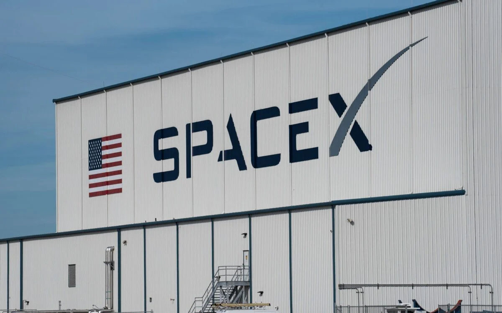
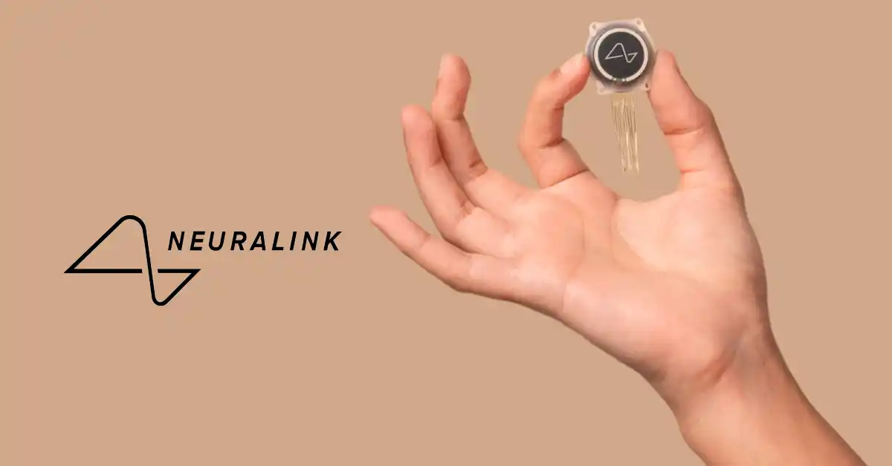
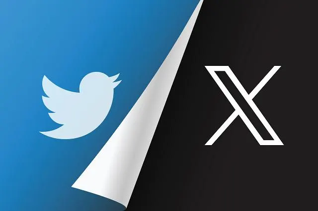
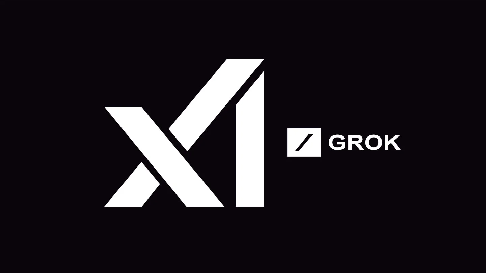
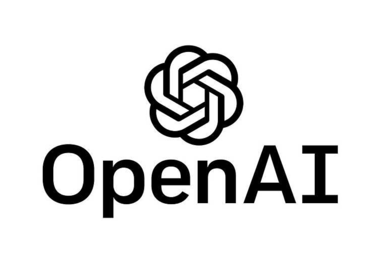
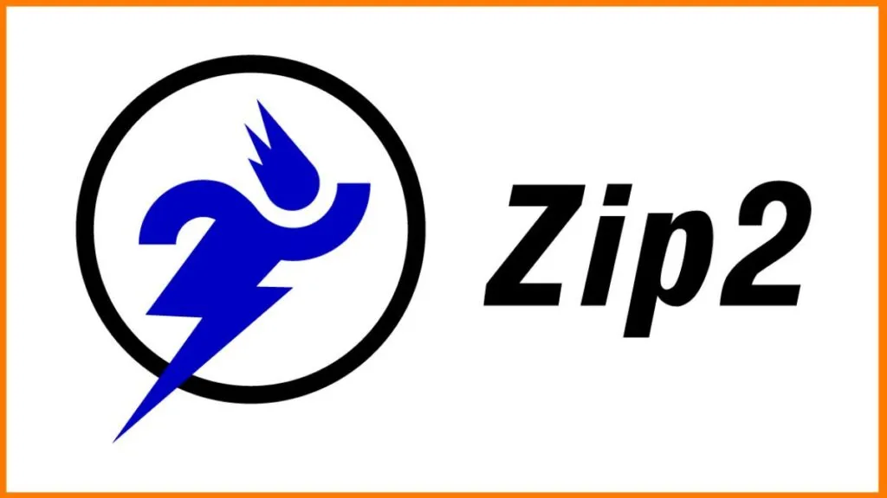

ALL OF ELON MUSK'S COMPANIES
Elon Musk and His Companies: A Brief Introduction
Elon Musk is a billionaire entrepreneur, engineer, and inventor known for
revolutionizing multiple industries, including electric vehicles, space
exploration, artificial intelligence, and transportation. Born in 1971 in
South Africa, he moved to the U.S. and became a key figure in technology
and innovation. His vision is to advance humanity through sustainable
energy, interplanetary travel, and artificial intelligence.
Here are all the major companies he has founded, co-founded, or played a
significant role in:
1. Tesla (2004 - Present)
A leader in electric vehicles (EVs) and sustainable energy solutions,
Tesla produces electric cars, solar panels, and battery storage systems.
Its goal is to accelerate the world’s transition to renewable energy.
Tesla Official Site

2. SpaceX (2002 - Present)
A private aerospace company developing reusable rockets, SpaceX aims to
reduce space travel costs and make Mars colonization a reality. Notable
projects include the Falcon 9, Starship, and the Starlink satellite
network.
SpaceX Official Site

3. Neuralink (2016 - Present)
This neurotechnology company is developing brain-computer interfaces
(BCIs) to help people with neurological conditions and eventually
integrate AI with the human brain.
Neuralink Official Site

4. The Boring Company (2016 - Present)
Focused on tunnel construction and urban transportation, The Boring
Company builds underground transit systems, such as the Las Vegas Loop, to
reduce traffic congestion.
Boring Company Official Site

5. X (formerly Twitter) (2022 - Present)
Musk acquired Twitter and rebranded it as “X,” aiming to turn it into an
“everything app” offering social media, financial services, and AI-driven
interactions.
X(Twitter) Official Site

6. xAI (2023 - Present)
An artificial intelligence company created to develop AI models that
compete with OpenAI and Google DeepMind, aiming to ensure AI is aligned
with humanity’s best interests.
xAI Official Site

7. SolarCity (2006 - 2016, Acquired by Tesla)
A solar energy company that specialized in solar panel installations and
renewable energy solutions. Tesla later acquired and integrated it into
its energy division.
SolarCity's Tesla Official Site

8. OpenAI (Co-founder, 2015 - Left in 2018)
Musk co-founded OpenAI to develop artificial intelligence in a safe and
beneficial way. However, he left due to disagreements over its direction
and commercial focus.
OpenAI Official Site

9. Zip2 (1995 - 1999, Sold)
Musk’s first company, Zip2 provided business directories and mapping
services for newspapers. It was acquired by Compaq for $307 million.
Intro to Zip2 at Wikipedia

10. X.com / PayPal (1999 - 2002, Sold)
X.com started as an online banking company and later became PayPal after a
merger. PayPal revolutionized digital payments before being sold to eBay
for $1.5 billion.
PayPal Ofiicial Site

Elon Musk’s companies share a common goal: pushing the boundaries of
technology to solve global challenges. From electric vehicles to space
travel, AI, and underground transportation, his ventures continue to shape
the future of multiple industries.